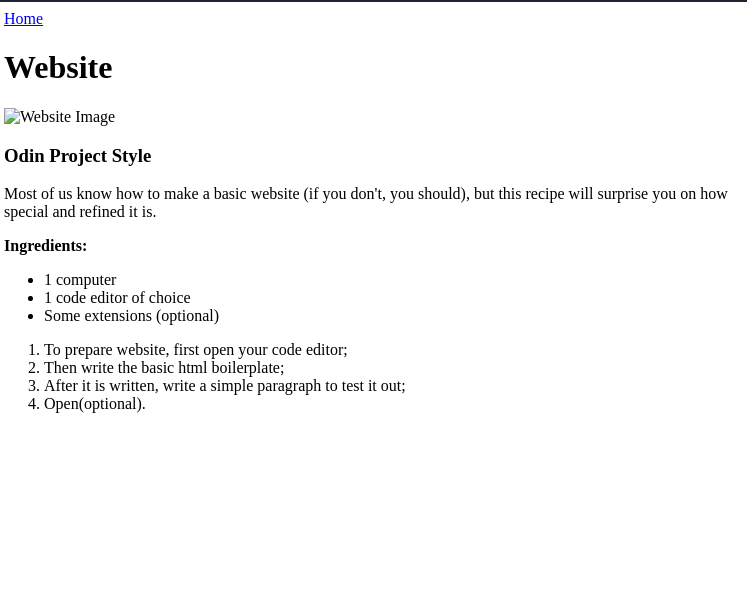

Home
Website

Odin Project Style
Most of us know how to make a basic website (if you don't, you should),
but this recipe will surprise you on how special and refined it is.
Ingredients:
- 1 computer
- 1 code editor of choice
- Some extensions (optional)
- To prepare website, first open your code editor;
- Then write the basic html boilerplate;
- After it is written, write a simple paragraph to test it out;
- Open(optional).